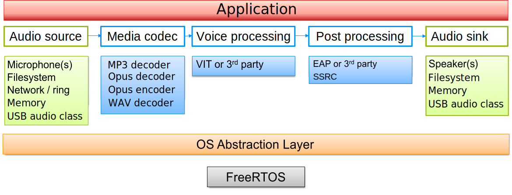

|
Maestro Audio Framework
v 1.7
NXP Semiconductors
|
|
Maestro Audio Framework
v 1.7
NXP Semiconductors
|
This document describes the basic usage of the Maestro Audio Framework. This framework intends to enable the chaining of basic audio processing blocks (called "elements"). These blocks then form stream processing objects ("pipeline"). This pipeline can be used for multiple audio processing use cases. The processing blocks can include (but are not limited to) different audio sources (for example file or microphone), decoders or encoders, filters or effects, and audio sinks. For detailed description of the Maestro framework, please refer to the programmer's guide.
Framework overview is depicted in the following picture:

The examples can be found in the audio_examples folder of the desired board. The demo applications are based on FreeRTOS and use multiple tasks to form the application functionality.
To set up the audio framework properly, it is necessary to create a streamer with streamer_create API. It is also essential to set up the desired hardware peripherals using the functions described in streamer_pcm.h. The Maestro example projects consist of several files regarding the audio framework. The initial file is main.c with code to create multiple tasks. For features including SD card (in the maestro_playback examples, reading a file from SD card is supported and in maestro_record writing to SD card is currently supported) the APP_SDCARD_Task is created. The command prompt and connected functionalities are handled by APP_Shell_Task.
One of the most important parts of the configuration is the streamer_pcm.c where the initialization of the hardware peripherals, input and output buffer management can be found. For further information please see also streamer_pcm.h
In the Maestro USB examples (maestro_usb_mic and maestro_usb_speaker), the USB configuration is located in the usb_device_descriptor.c, audio_microphone.c and audio_speaker.c files. For further information please see also usb_device_descriptor.h, audio_microphone.h and audio_speaker.h.
In order to be able to get the messages from the audio framework, it is necessary to create a thread for receiving the messages from the streamer, which is usually called a Message Task. The message thread is placed in the app_streamer.c file, reads the streamer message queue, and reacts to the following messages:
Prints component versions
File command is supported in the maestro_playback example. The command calls the STREAMER_file_Create or STREAMER_PCM_Create function from the app_streamer.c file depending on whether or not MULTICHANNEL_EXAMPLE is defined.
MULTICHANNEL_EXAMPLE is not defined:STREAMER_file_Create function that creates the STREAM_PIPELINE_FILESYSTEM pipeline.SSRC_PROC is defined, the synchronous sample rate converter is added before the audio sink element. Playback itself can be started with STREAMER_Start function. The pipeline can consist of the following elements:SSRC_PROC is defined)MULTICHANNEL_EXAMPLE is defined:STREAMER_PCM_Create function, which creates STREAM_PIPELINE_PCM_AUDIO pipeline.app_streamer.c file using file source properties sent to the streamer: PROP_FILESRC_SET_SAMPLE_RATE - default value is 96000 [Hz] PROP_FILESRC_SET_NUM_CHANNELS - default value is 8 PROP_FILESRC_SET_BIT_WIDTH - default value is 32STREAMER_Start function. The pipeline can consist of the following elements:Other possible element types could be found in the streamer_api.h.
Each of the elements has several properties that can be accessed using streamer_get_property. These properties allow a user to change the values of the appropriate elements. The list of properties can be found in streamer_element_properties.h. See the example of setting property value in the following piece of code from app_streamer.c:
Some of the predefined values can be found in the streamer_api.h.
Record_mic command is only supported in the maestro_record example. The command creates pipeline described in the STREAMER_mic_Create function in the app_streamer.c file. The pipeline is selected with STREAM_PIPELINE_PCM, STREAM_PIPELINE_MIC2FILE or STREAM_PIPELINE_VIT in pipeline_type parameter. Depending on the command option, that may be either audio, file or vit. This configuration takes samples from the microphone input and sends them to the audio sink (speaker(s) or filesystem) with optional processing in between.
The pipeline can consist of the following elements:
VOICE_SEEKER_PROC is defined and the VIT option has been selected)Other possible element types and some of the predefined values could be found in the streamer_api.h.
Opus_encode command is only supported in the maestro_record example. The command creates pipeline described in the STREAMER_opusmem2mem_Create function in the app_streamer.c file. The pipeline is selected with STREAM_PIPELINE_OPUS_MEM2MEM in pipeline_type parameter. This configuration takes PCM samples from memory and sends them to the Opus encoder. The encoded data is stored in memory and compared to a reference.
The pipeline can consist of the following elements:
Other possible element types and some of the predefined values could be found in the streamer_api.h.
Usb_mic command is only supported in the maestro_usb_mic example. The command creates pipeline described in the STREAMER_mic_Create function in the app_streamer.c file. The pipeline is selected with STREAM_PIPELINE_PCM in pipeline_type parameter. This configuration takes samples from the microphone input and sends them to the audio sink (USB port). The pipeline can consist of the following elements:
Other possible element types and some of the predefined values could be found in streamer_api.h.
Usb_speaker command is only supported in the maestro_usb_speaker example. The command creates pipeline described in the STREAMER_speaker_Create function in the app_streamer.c file. The pipeline is selected with STREAM_PIPELINE_PCM in pipeline_type parameter. This configuration takes samples from the USB port and sends them to the audio sink (speaker output). The pipeline can consist of the following elements:
Other possible element types and some of the predefined values could be found in streamer_api.h.
Start command is only supported in the maestro_sync example. The command creates two pipelines described in the STREAMER_Create function in the app_streamer.c file. The pipelines are selected with the STREAM_PIPELINE_PCM_AUDIO_MEM and STREAM_PIPELINE_VIT_FILESINK in pipeline_type parameter. This configuration should demonstrate the use of synchronous pipelines (Tx and Rx in this case) in a single streamer task.
Other possible element types and some of the predefined values could be found in streamer_api.h.
Users can change the pipeline type when creating the streamer object. Currently tested options are:
STREAM_PIPELINE_PCMSTREAM_PIPELINE_NETBUFSTREAM_PIPELINE_FILESYSTEMSTREAM_PIPELINE_MIC2FILESTREAM_PIPELINE_VITSTREAM_PIPELINE_MEMSTREAM_PIPELINE_OPUS_MEM2MEMSTREAM_PIPELINE_PCM_AUDIOSTREAM_PIPELINE_PCM_AUDIO_MEMSTREAM_PIPELINE_VIT_FILESINKIn order to create a user defined pipeline, please see the programmer's guide.
The current version of the audio framework supports some optional features. These can be limited to some MCU cores or boards variants.
The maestro_playback can play multiple files with the file option (STREAM_PIPELINE_FILESYSTEM). The opus (as standalone or as a part of ogg encapsulation) and mp3 codecs are supported for now. For detailed code handling this file extension please check cmd.c file and shellFile() function. Supported codecs and its options are:
| Decoder | Sample rates [kHz] | Number of channels | Bit depth |
|---|---|---|---|
| AAC | 8, 11.025, 16, 22.050, 24, 32, 44.1, 48 | 1, 2 (mono/stereo) | 16 |
| FLAC | 8, 11.025, 16, 22.050, 24, 32, 44.1, 48 | 1, 2 (mono/stereo) | 16 |
| MP3 | 8, 11.025, 16, 22.050, 32, 44.1, 48 | 1, 2 (mono/stereo) | 16 |
| opus | 8, 16, 24, 48 | 1, 2 (mono/stereo) | 16 |
| WAV | 8, 11.025, 16, 22.050, 32, 44.1, 48 | 1, 2 (mono/stereo) | 8, 16, 24 |
For more details about the codecs please see following documents: AAC decoder,FLAC decoder,MP3 decoder,opus,WAV decoder
Using maestro_playback_8ch_96kHz example users can play PCM files from the SD card and output either 2 or 8 channels with 96kHz sampling rate and 32bit depth (just RT1060-EVKB with AUD-EXP-42448 expansion board supported).
VIT can be enabled for the record_mic command using the vit option. In the STREAMER_mic_Create function in the app_streamer.c file, the VIT_PROC preprocessor define ensures the creation of pipeline with VIT (STREAM_PIPELINE_VIT). More details about VIT are available in the VIT package, which is located in middleware\vit\{platform}\Doc\(depending on the platform) or via following link.
VoiceSeeker can be enabled for the record_mic command using the vit option. In the STREAMER_mic_Create function in the app_streamer.c file, the VIT_PROC and VOICE_SEEKER_PROC preprocessor defines ensure the creation of pipeline with VIT and VoiceSeeker (STREAM_PIPELINE_VIT). More details about VoiceSeeker are available in the VoiceSeeker package, which is located in middleware\voice_seeker\{platform}\Doc\(depending on the platform) or via following link.
Synchronous sample rate converter can be enabled for the file command. In the STREAMER_file_Create function on the app_streamer.c file SSRC_PROC preprocessor define ensures the creation of pipeline with the synchronous sample rate converter. More details about SSRC are available in the User Guide, which is located in middleware\maestro\mcu-audio\ssrc\doc\.
Asynchronous sample rate converter is not used in our examples, but it is part of the maestro middleware and can be enabled. To enable ASRC, the maestro_framework_asrc and CMSIS_DSP_Library_Source components must be added to the project. Furthermore, it is necessary to switch from Redlib to Newlib (semihost) library and add a platform definition to the project (e.g. for RT1170: PLATFORM_RT1170_CORTEXM7). Supported platforms can be found in the PL_platformTypes.h file.